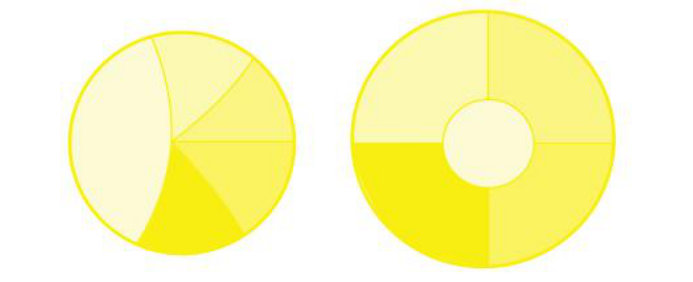
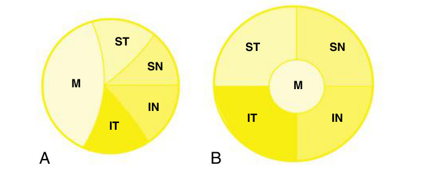
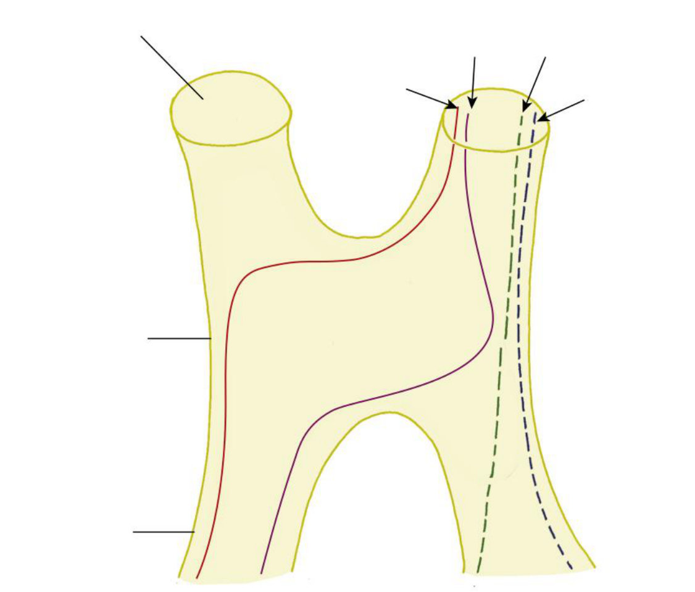
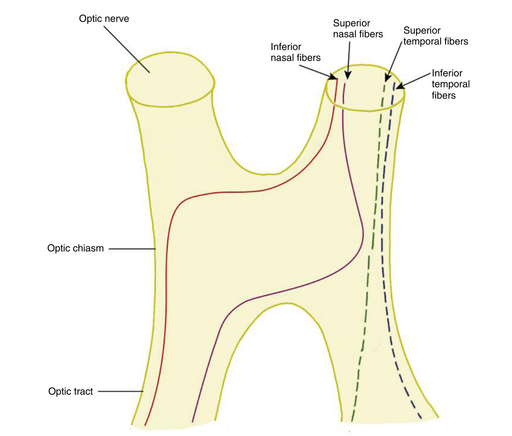
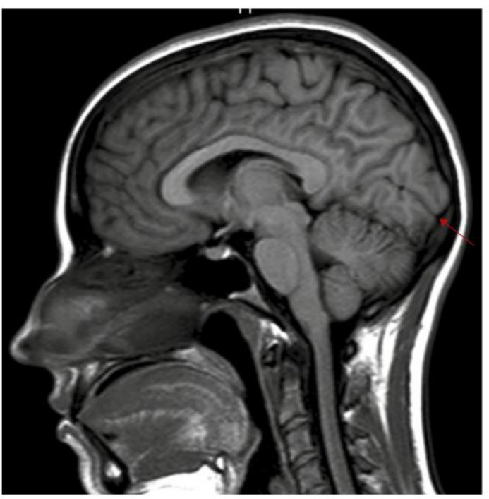
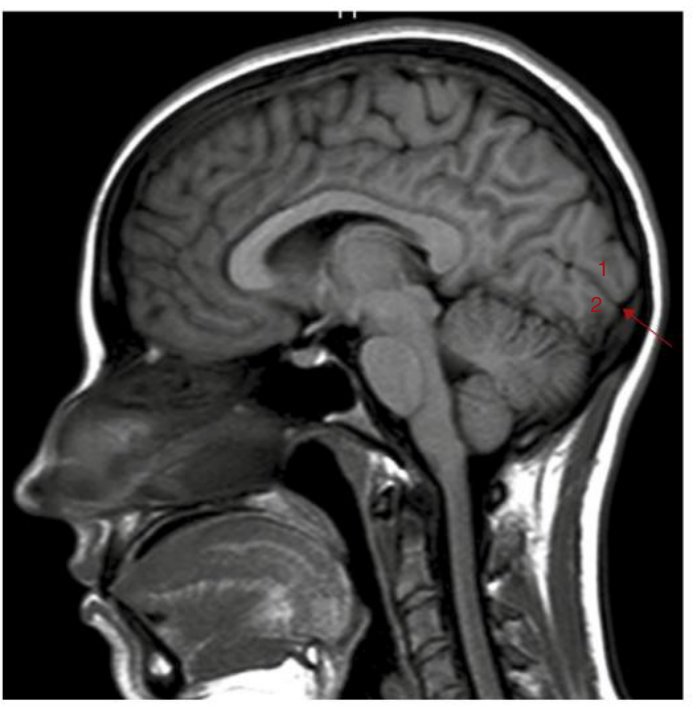
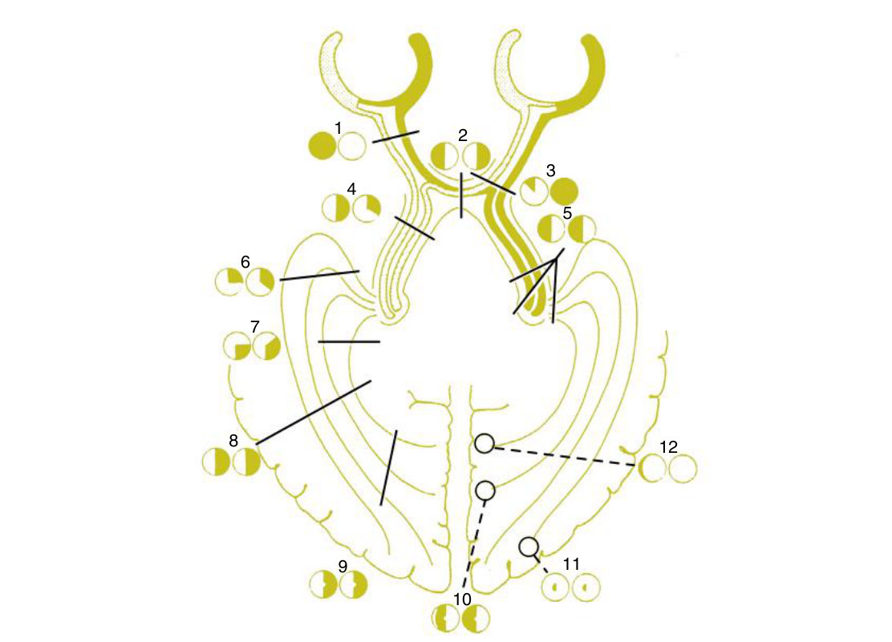

From the field back to the lesion
Your note on the handout reads "one of the most important one!". Three questions take you from any visual field to the place that is damaged.
Shown a pair of visual fields, work out where the lesion is — and shown a lesion site, draw the fields. Three questions, in order, every time.
How the field is represented on the retina · how the fibres exit through the optic disc and what that does to the field · where the visual fibers are located in the optic nerve · how fibres travel through the chiasm and what that does to the field · the location of inferior, superior and macular fibres in the tract, LGN, radiations and occipital lobe · the macular and peripheral representation on the cortex · and correlate lesions with the visual field and vice versa.
Exam guidelines · p. 8
1. The field lands on the retina upside down and back to front
| Field | Imaged on | Reaches |
|---|---|---|
| Superior field | inferior retina | below the calcarine fissure — lingual gyrus |
| Inferior field | superior retina | above the fissure — cuneus |
| Nasal field | temporal retina | the same side — temporal fibres do not cross |
| Temporal field | nasal retina | the opposite side — nasal fibres cross |
| Fixation | fovea | the occipital pole |
Always say which you mean — field or retina. Both use nasal / temporal / superior / inferior, and your own note flags it: "Gesichtsfeld vs. Netzhautfeld".
And "right visual field" means the right half of the field of both eyes — not the right eye's field. The right field is seen by the left cortex.
The blind spot is in the temporal field of each eye, because the disc is always nasal to the macula.
TB 15 · p. 249 · Handout 12 · p. 11–12
2. At the disc and in the nerve
| Fibre group | Course in the retina | Enters the disc at |
|---|---|---|
| Papillomacular bundle | straight from the macula | the temporal side — about ⅓ of the disc for 1/20 of the retina |
| Temporal fibres | cannot cross the horizontal raphe, so they arch above and below the macula | the superior and inferior poles |
| Nasal fibres | radiate straight in | the nasal side |
Just behind the lamina the arrangement is still that of the disc. Within a short distance the macular fibres move to the centre and the rest take their logical quadrants — ST, IT, SN, IN.
Damage the temporal fibres at the inferior disc and the defect curves round fixation from the blind spot to the horizontal nasal meridian, ending in a nasal step — and it respects the horizontal line, because the raphe stops fibres crossing it. Inferior disc → superior field.
TB 15 · p. 246, 250, 252

Answer: Fig. 15.13 with labels

A (disc): M on the temporal third · ST superior pole · IT inferior pole · SN and IN nasally. B (nerve): M in the centre, ST · SN · IN · IT in the four quadrants.
3. The chiasm
Nasal fibres cross; temporal fibres stay. Crossed to uncrossed is about 53 : 47. The result is the organising fact of the whole pathway: everything in the left field ends up in the right brain, and vice versa.
| Fibres | Through the chiasm |
|---|---|
| Inferior nasal | cross anteriorly, at an almost 90° angle — the most easily compressed (the disputed Wilbrand knee) |
| Superior nasal | cross further back, at a shallower angle |
| Temporal (ST, IT) | do not cross; run straight back on the lateral side |
What sits around it matters as much as what is in it: the pituitary gland about 1 cm below (the commonest cause of a bitemporal defect), the hypothalamus above, the internal carotids on each side, and the whole thing inside the circle of Willis.

Answer: Fig. 15.14 with labels

Optic nerve · optic chiasm · optic tract. Arrows, left to right: inferior nasal (cross) · superior nasal (cross) · superior temporal (stay) · inferior temporal (stay).
4. Behind the chiasm — one rule all the way to the cortex
| Level | Superior retinal fibres | Inferior retinal fibres | Macular |
|---|---|---|---|
| Optic tract | medial | lateral | between |
| LGN | medial | lateral | dorsal wedge, ⅔–¾ |
| Radiations | superior, parietal lobe | inferior, Meyer loop through the temporal lobe | between |
| Cortex | cuneus, above the fissure | lingual gyrus, below it | most posterior — the occipital pole |
In the LGN: crossed fibres end in layers 1, 4, 6, uncrossed in 2, 3, 5; each layer hears from one eye only. Layers 1–2 are magnocellular (movement), 3–6 parvocellular (colour and detail), with thin koniocellular layers beneath each.
In the cortex: the macula takes a huge share of V1 at the pole; the periphery is represented anteriorly, and the most anterior strip is the temporal crescent, seen by one eye only.

Answer: Fig. 15.9 with labels

Arrow: calcarine fissure · 1 cuneus gyrus above · 2 lingual gyrus below.
5. Lesion ↔ field
| Lesion | Field defect | Extra clues |
|---|---|---|
| Nerve fibre layer (glaucoma) | arcuate with a nasal step | one eye; respects the horizontal |
| Optic nerve | that eye only; complete lesion = blind eye | RAPD, later optic atrophy |
| Nerve–chiasm junction | junctional scotoma: that eye depressed + superior temporal defect opposite | the contralateral inferior nasal fibres cross anteriorly |
| Chiasm, midline | bitemporal hemianopia | respects the vertical; usually a pituitary tumour |
| Optic tract | contralateral homonymous, often incongruent | optic atrophy; RAPD possible in the contralateral eye |
| Temporal lobe (Meyer loop) | contralateral homonymous, superior, incongruent | no atrophy, no RAPD from here back |
| Parietal lobe | contralateral homonymous, inferior, incongruent | all radiations = total hemianopia |
| Occipital cortex | contralateral homonymous, congruent | anterior → peripheral with macular sparing; posterior → macular defect |

1 · One eye or both? One eye → in front of the chiasm. Both → chiasm or behind.
2 · Which midline does it respect? Horizontal → retina, disc or nerve. Vertical → chiasm or behind.
3 · If vertical: bitemporal, or homonymous? Bitemporal → chiasm. Homonymous incongruent → tract or radiations. Homonymous congruent → LGN or cortex.
Handout 12 · p. 17 · TB 15 · p. 249–252 · Your notes
Homonymous = the same half of the field in both eyes (nasal field of one + temporal field of the other). Hemianopia = the whole half. Congruent = the two eyes' defects have the same shape, which points to the cortex.
And remember: behind the chiasm, acuity is usually normal — half a fovea is enough for 20/20. The field gives the diagnosis, not the acuity.
Optic nerve 5–6 cm: intraocular 0.7–1 mm · intraorbital 30 mm · intracanalicular 6–10 · intracranial 10–16 · 1–2.22 million fibres, 90% to the LGN · chiasm 15 × 8 × 4 mm, pituitary ~1 cm below · crossed : uncrossed 53 : 47 · LGN crossed 1, 4, 6 and uncrossed 2, 3, 5 · macular sparing counts only above 3°.
6. Drill
More: Mixed quiz — Chapter 12 · pictures only: Image quiz — Chapter 12.
Read study script § chapter 12, sections 10 and 11, then Handout 12 pages 13–17. Then cover the table above, open Fig. 15.20, and name all twelve defects from the picture alone.
All twelve chapters are now covered by a lesson, the study script and a question bank. From here the work is repetition: the mock exam across every chapter, and the chapters you miss most. Ask your teacher for a focused quiz on anything that keeps slipping.